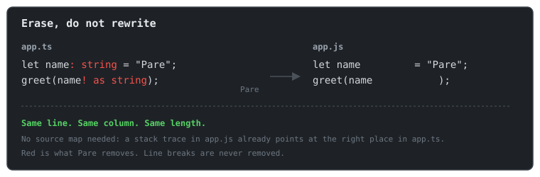

Pare documentation
Pare turns TypeScript into JavaScript by erasing the types. That is all it does. It is written in C#, ships as one native binary, and needs no Node, no npm and no source maps.
Here is a file before and after:
ts
function add(a: number, b: number): number {
return a + b;
}
js
function add(a , b ) {
return a + b;
}
The types became spaces. Every other character is still on the same line and column it started
on. When the browser says app.js:2:10, that is app.ts:2:10.

Who it is for
- ASP.NET Core developers who want to write TypeScript in
wwwrootwithout installing Node. Add one package anddotnet builddoes the rest. - Anyone with a static site who wants a single binary that turns
src/*.tsintojs/*.js. - Tool authors who want to strip types from C#, or from Rust, Go, Python and others through a C library.
Who it is not for
Pare does not type check, bundle, minify or compile JSX. If you need those, use tsc, esbuild or
Vite. Pare also refuses TypeScript that needs generated code, such as enum. It tells you what
to write instead. See What Pare does not do.
Where to go next
| You want to | Read |
|---|---|
| Try it in five minutes | Getting started |
| Add it to an ASP.NET Core app | Your first web app |
| Use it without .NET | Your first static site |
| Understand how it works | How Pare works |
| See how it compares to esbuild, Node and the rest | Pare and the alternatives |
| Look up an error | Error codes |
| Look up a setting | MSBuild properties |